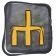
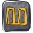
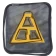
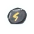
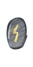
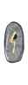

Loot, the old wayKořist postaru
Grid inventory, unidentified items, durability and the smith's bill. Prefixes from the old gods, so you might find Perun's axe of the Wolf. Four tiers of every base, from plain through forged and deep to Nav-forged. Your lamp is gear too: it decides how far you see.
Mřížkový inventář, neidentifikované věci, opotřebení a účet u kováře. Předpony po starých bozích, takže najdeš třeba Perunovu sekeru vlka. Každý předmět ve čtyřech stupních, od obyčejného přes kovaný a hlubinný po navský. I kahan je výbava: rozhoduje, jak daleko uvidíš.
normalobyčejné
magickouzelné
rarevzácné
setsadové
uniquejedinečné

Sockets and gemsZásuvky a drahokamy
Czech stones in four grades, chipped to perfect: Bohemian garnet, amethyst, jasper, rock crystal, agate and moldavite. Each gives one thing in a weapon, another in armour, a third in a shield.
České kameny ve čtyřech stupních, od úlomku po dokonalý: český granát, ametyst, jaspis, křišťál, achát a vltavín. Každý dá něco jiného ve zbrani, ve zbroji a ve štítu.
Glagolitic wordsHlaholská slova
Twenty-one letters of the oldest Slavic alphabet drop in the mines. Set the right ones, in the right order, into a plain item and they spell a word of power.
V dolech padá dvacet jedna písmen nejstaršího slovanského písma. Vsaď ta správná ve správném pořadí do obyčejného předmětu a složí slovo moci.



ThunderstonesHromové kameny
People believed they fall with the lightning. Carry one in your bag, not on your body, and it works: the bigger the stone, the more room it takes.
Lidé věřili, že padají s bleskem. Stačí ho nosit v torbě, ne na sobě, a působí: čím větší kámen, tím víc místa zabere.



The forgeVýheň
The smith lets you use his forge. Put things in, strike: three gems become a better one, letters climb the alphabet, chipped gems open sockets, a fern flower takes them back out, and the right letters raise an item a whole tier.
Kovář ti půjčí výheň. Vlož, udeř: ze tří drahokamů je lepší, písmena stoupají abecedou, úlomky otevřou zásuvky, kapradí květ je zase vyjme a správná písmena zvednou předmět o celý stupeň.
Stash and diceTruhla a kostky
A big chest by the well, and a second one shared by all your heroes, so a set piece found by the Miner can go to the Smith. At the inn you can dice for an item you only see the shape of: mostly magic, one in five rare, now and then a set piece or a unique.
Velká truhla u studny a druhá, společná pro všechny tvé hrdiny, takže sadový kus, který najde havíř, může dostat kovář. V hospodě si můžeš zahrát v kostky o věc, u které vidíš jen tvar: většinou kouzelná, každá pátá vzácná, občas sadová nebo jedinečná.
Diablo II rulesPravidla Diabla II
Attack rating against defence, block from dexterity and level, hit recovery that staggers you, deadly strike, crushing blow, damage reduction, and less life stolen on each harder difficulty.
Útok proti obraně, vykrývání z obratnosti a úrovně, zotavení z rány, které tě zastaví, smrtící úder, drtivý úder, snížení poškození a na každé těžší obtížnosti méně ukradeného života.